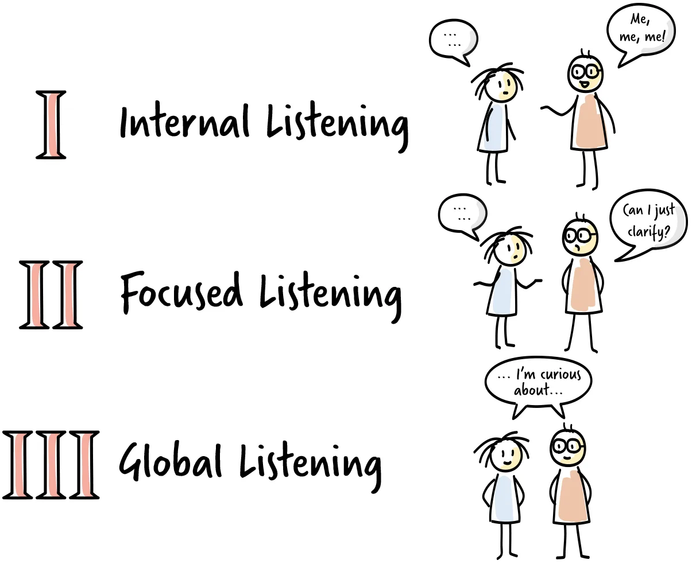

Why listening needs practice
Even while we listen to someone, our brain is busy: it reflects on the words, ties them to our own experience and studies the other person's manner. It is easy to get distracted by our own thoughts, even when we are trying to focus.
In everyday conversations this is natural. In a coaching conversation, however, we want to stay with what the other person is telling us. Coaches use several listening techniques and models for this. Here are a few that we find helpful.
Communication enablers
A first step towards communicating effectively is becoming aware of what makes communication possible in the first place. Anyone who has travelled to another country knows that a shared language is one of the basic enablers. Without it, communication is reduced to very simple things or seems impossible.
Enablers range from general factors that are hard to change in the moment, such as the lack of a common language, cultural differences or unexamined prejudice, to situational factors that we can adjust. Creating an environment that enables communication can involve any of the following:
Managing emotional states. Manage your own emotional state and understand that of the other person. Someone who has had a bad day, lacks sleep or has a headache will find it harder to organise their thoughts and communicate clearly.
Recognising your biases. Stop yourself from jumping to premature conclusions. Resist the temptation to impose your own ideas or advice, and work on staying neutral and objective.
Openness and honesty. Approach the conversation without taking anything for granted, accept different perspectives, entertain several hypotheses and make an effort to test them.
A distraction-free environment. A noisy room, movement outside or messages on your phone pull your attention away. Create a space where these cannot interfere.
A wide communication channel. Make sure the conversation can include facial expressions, body language and tone of voice, not only words. Compare how much a text message conveys with a face-to-face conversation.
Levels of listening

Listening can take different forms, some more suitable for coaching than others. The authors of Co-Active Coaching describe three levels of listening, which roughly correspond to "me", "you" and "us".
Level I: internal listening (me). We filter what is being said through our own memories and experiences. We may be reminded of similar situations and tempted to shift the topic to our own experience. Listening at this level can occasionally bring up new information or break the ice, but it is generally less helpful in coaching.
Level II: focused listening (you). All our attention is on the other person, as if we were studying them. We aim to take in everything they convey, including tone of voice, body language and emotions, to the exclusion of what is around us. Level II listening helps us learn more about the person in the moment and reflect what we receive back to them. It also lets us listen again for their reaction to our response.
Level III: global listening (us). We take in what the speaker conveys and the environment around us, using all our senses. We notice things beyond what we immediately receive, including our own intuition, which we treat as further information to reflect back. As at Level II, we listen for the reaction to our response, but more broadly: Level III lets us read the room, understand our impact and adjust our behaviour.
Active listening
Active listening happens at Levels II and III and requires full concentration on what is said and how it is said, through body language, intonation and behaviour. It has three phases.
Comprehending means understanding not only words and sentences but also their context. Cultural context, quirks of language and tone of voice all help us tell the difference between, for example, a sarcastic remark and a sincere one.
Retaining means holding on to what is being conveyed. Here, loss of focus and the limits of our short-term memory work against us. A conversation has no rewind button, so information gets lost and important points are not always recognised straight away. Taking notes and listening for keywords help us retain information and come back to it. We can also ask for a short pause to write down and organise what we have heard.
Responding includes verbal and non-verbal responses. Responding builds rapport and trust, which is another communication enabler, and it improves our understanding when we summarise or paraphrase what we have heard. We may add our own reflections, not to impose an opinion but to reflect back what we have observed and understood. This can support the speaker or contradict them to move the conversation forward. Active listening is an interaction between both sides of the conversation.
Shift and support responses
Different responses serve different purposes. In coaching, there is one type we want to use most and another we tend to avoid.
A shift response moves the topic from what the speaker is saying to another subject. It often happens when the listener is focused less on the speaker and more on finding a gap to bring in their own ideas. It can come across as rude and leave the speaker feeling unheard. In coaching it is usually avoided, although it can be useful when a conversation is going round in circles and needs a new direction.
A support response follows the speaker and keeps the conversation flowing without driving it. It relies on empathy and understanding and keeps the relationship positive. The speaker stays at the centre while the listener clarifies, understands and empathises, for example by asking for more detail, how a situation made them feel or what came of it.
Listening and responding can both be refined, to create an environment in which the other person feels free to speak openly.
Practice
Level I and Level II. Ask a partner to tell you about a trip they took, including what went well and what did not. For ten minutes, listen at Level I: interpret the story in terms of your own experience and comment often with your opinion. Then listen to the same story for ten minutes at Level II: be curious, ask questions, clarify and notice your partner's values. Afterwards, tell each other what it was like to listen and to be listened to at each level.
Levels of listening at work. After your conversations for a week, give yourself a score from 1 to 10 for how much you listened at Level I, II and III. What do you notice about the other person's ability to solve their own problems when you listen at each level?
Global listening. The next time you are in a busy place, such as a café, a station or an office, listen at Level III. How are people feeling? Where is the energy, and how does it shift? Then try it with your eyes closed. What do you notice that you did not notice before?
Further reading
- Kimsey-House, H., Kimsey-House, K., Sandahl, P. and Whitworth, L.: Co-Active Coaching. The source of the three levels of listening.